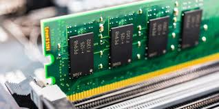
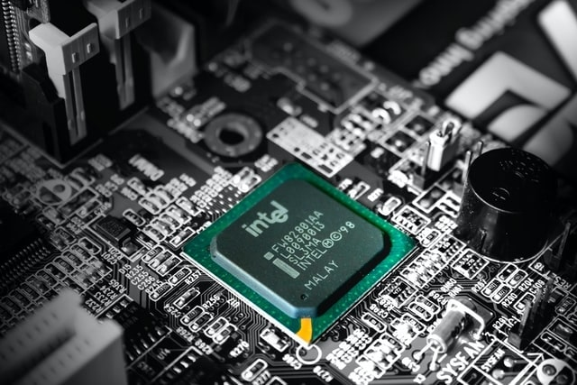
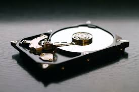
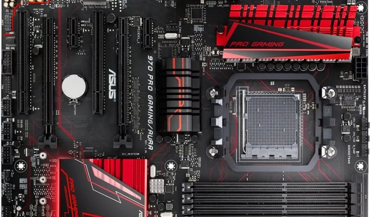
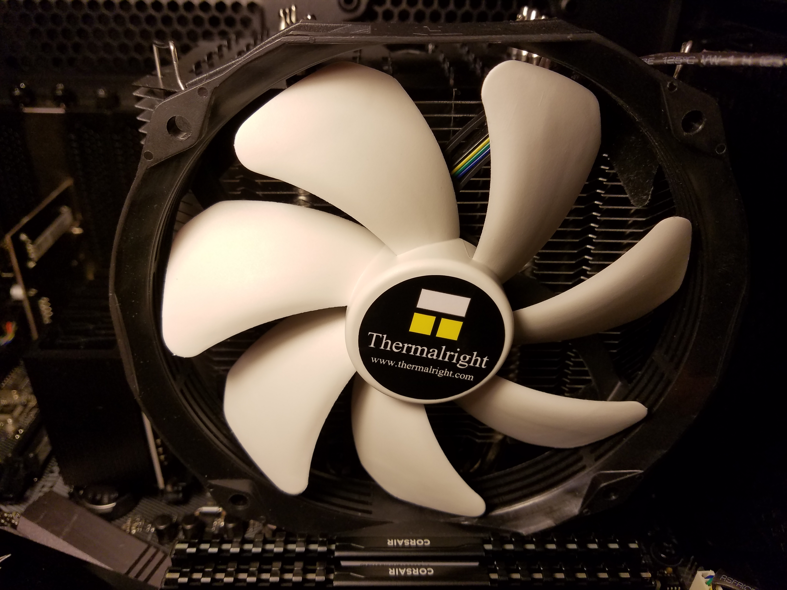
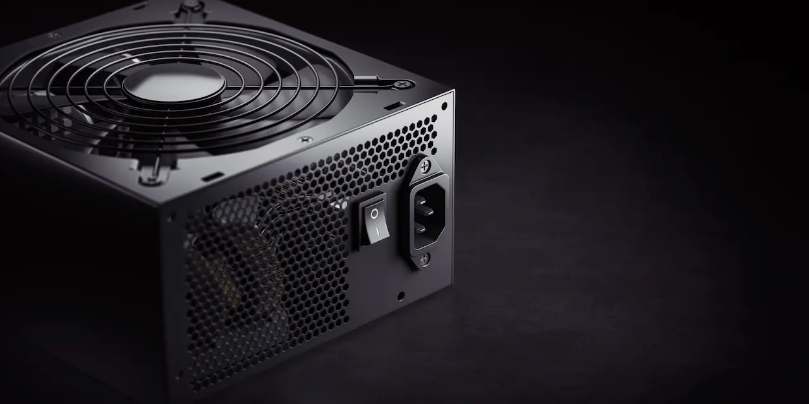

SE ENCUENTRAN DISPONIBLES LAS TARJETAS RAM DE DISTINTAS CAPACIDADES COMO SER DE 2, 4, 8, 16 Y 32 GIGAS DE CAPACIDAD. DISPOBILES TAMBIEN EN LAS DISTINTAS MARCAS COMO SER GIGABITE, KINGSTON, SAMSUNG, ETC

CONTAMOS CON CALIDAD DE PROCESADORES DE LAS MARCAS INTEL Y RAYZEN TENIENDO DE LAS DIFERENTES CARACTERISTICAS COMO SER INTEL CORE I3, I5, I7, I9 RYZEN 3, RYZEN 5, RYZEN 7, RYZEN 9 CON GRAFICOS INCLUIDOS PARA MEJORAR TU EXPERIENCIA AL MOMENTO DE USAR TU COMPUTADORA O AL MOMENTO DE ENSAMBLAR TU PC FUTURISTA

CONTAMOS CON LAS DIFERENTES CAPACIDADES DE DISCO DURO COMO SER DE 128, 256, 512 Y 1T PARA QUE PUEDAS ALMACENAR TODA LA INFORMACION QUE DESEES. ASIMISMO CONTAMOS CON LAS DIFERENTES MARCAS PARA EL ENSAMBLAJE DE TU COMPUTADORA COMO SER DE LAS MARCAS TOSHIBA, WESTER UNION, KINGSTON, PATRIOT, SAMSUNG, GIGABITE

CONTAMOS CON LOS DIFERENTES ESTILOS Y CAPACIDADES EN TARJETAS O PLACAS MADRE DE LA MEJOR CALIDAD Y DE LAS MEJORES MARCAS PARA TU PC FUTURISTA

Los ventiladores de PC son componentes esenciales de refrigeración activa que expulsan aire caliente y atraen aire fresco para mantener la temperatura óptima de los componentes, evitando sobrecalentamientos. Generalmente axiales, se clasifican por tamaño (120mm/140mm más comunes) y utilizan conectores de 3 o 4 pines

Las fuentes de poder (PSU) de PC convierten la corriente alterna (CA) de la red eléctrica en corriente continua (CC) de bajo voltaje ( ) para alimentar los componentes internos. Regulan el voltaje, filtran la electricidad para evitar daños, y ofrecen diferentes potencias y eficiencias (80 Plus) según las necesidades del sistema

La tarjeta de video (o tarjeta gráfica/GPU) es un componente de hardware esencial que procesa datos de la CPU y los convierte en información visual, mostrándola en un monitor. Se especializa en renderizar imágenes, videos y gráficos 3D de alta calidad, siendo fundamental para videojuegos, diseño gráfico y edición de video.